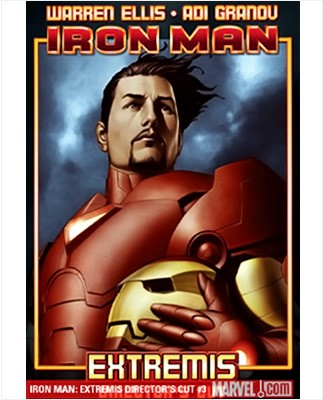

여심을 사로잡는 매력적인 미소의 백만장자 플레이보이 토니 스타크(Tony Stark). 실제 그는 초창기 마블 히어로들 중에서 가장 많은 여성팬을 보유한 히어로로, 천재 발명가이자 몇 번이나 지구를 위기에서 구해낸 장본인이다. 아이언맨이 세상에 소개된 해는 1963년. SF물을 주로 다루던 <테일즈 오브 서스펜스(Tales of Suspense) 39호>를 통해서였는데, 이는 1961년에 '판타스틱 포(Fantastic Four)'가 탄생하면서 마블 슈퍼히어로의 시대를 예고한 이래, '헐크(Hulk)', '스파이더맨(Spider-man)', '앤트맨(Ant-Man)', '토르(Thor)'를 잇는 여섯 번째 슈퍼히어로의 탄생이었다.
흔히 토니 스타크의 천재적 두뇌와 막강한 재력은 DC 최고의 슈퍼히어로로 손꼽히는 배트맨과 종종 비교된다. 그런데 '고담시'라는 한정된 공간이 주요 배경이 되는 배트맨과 달리, 아이언맨은 적국의 스파이들과 테러조직, 세상을 혼란에 빠뜨리고 부를 챙기려는 부패한 정치가와 기업가들을 상대로 국제적인 범위의 싸움을 벌여왔다. 슈퍼히어로 외적으로의 활동도 왕성하게 벌여 대기업 오너, 쉴드(S.H.I.E.L.D) 국장, 미국 국방부 장관 등 정치ㆍ경제 권력의 핵심부에서 활약했다.
